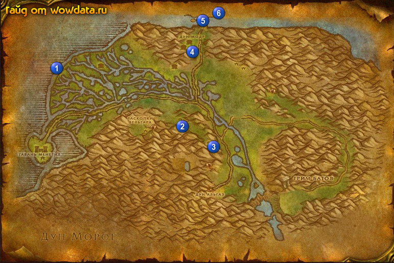

1) Сделайте Гавань Менетил вашим домом.
2) Идите к кораблям 1 (14, 25) и убейте Капитан Халиндор, из него выпадет ключ, которым отоприте сундук в нижней части корабля, тем самым закончите <Очищение> и начните <Око Палета>.
3) Используйте катапульту 2 (47, 47) в лагере орков, чем и закончите <Гамбит Нек'роша>, начните <Убить Нек'роша>.
4) Идите делайте <Убить Нек'роша> 3 (53, 55), сначала расчистите поляну от лишних мобов, а потом пульте Вождь Нек'рош, когда рядом с ним не будет других мобов (ну или лишний моб будет 1). Не стесняйтесь позвать друзей или просто случайного встречного помочь вам.
5) По руне вернитесь в Гавань Менетил.
6) В гостинице закончите <Око Палета> и начните <Проклятое Око>.
7) Идите на верх замка и закончите <Убить Нек'роша>.
8) Начните <Падение Дун Модра> у дварфа, валяющегося у входа в замок.
9) Закончите <Падение Дун Модра> 4 (49, 18) и начните <Мост Тандола>.
10) Пройдите на середину моста 5 (51, 8), войдите в проем справа. Спуститесь вниз, найдите тело дварфа, используйте его, чем и закончите <Мост Тандола>, начните <Мост Тандола>. Вернитесь обратно в лагерь 4 (49, 18) и закончите квест, начните <Мост Тандола>.
11) Идите обратно на мост, пройдите через него и по веревочно - деревянному мосту идите направо, там взорвите склад со взрывчаткой 6 для <Мост Тандола>. Вернитесь в лагерь 4 (49, 18) и закончите квест, начните <Просьба о помощи>.
12) У вас сейчас должно быть половина или более экспы на 31 лвл.
13) Бегите в 7 (45, 47) в Нагорье Арати и закончите <Просьба о помощи>.
14) Откройте пункт полета.
15) Бегите по дороге в следующую локациюПредгорья Хилсбрада. (см. сразу пункт ниже).
16) Пока бежите, остановитесь у поворота 8 (27, 49) и идите на юг в Крепость Стромгард.
17) На первом повороте в замке сверните направо и бегите в охраняемую зону (это если вы тут небыли и не знаете что и где), затем по дороге (3 раза повернув направо в охраняемой зоне) выйдите на мост, перейдите его и найдите единственного тут вендора 9 (27, 59), купите у него все 3 книги которые учат навыку Первой помощи. Ну и то что можете сразу выучите.
18) Бегите дальше в Предгорья Хилсбрада 10.